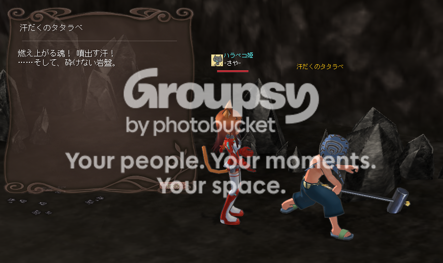
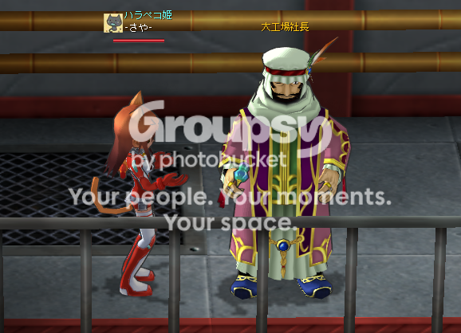
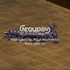
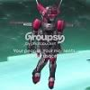
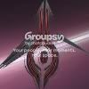
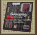
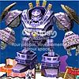
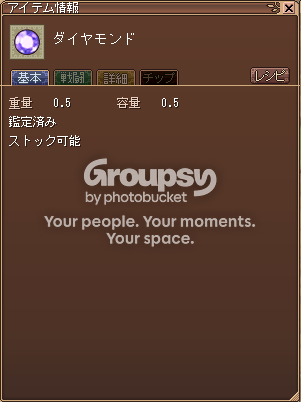
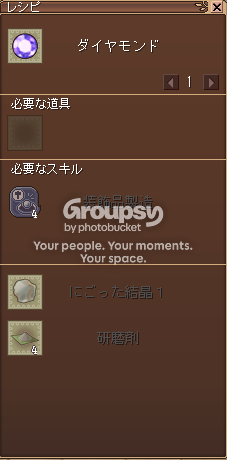

I. วิธีการรับปราสาทบินริง1. เริ่มต้นให้ไปที่ห้องล๊อบบี้ Ancient Arc Lobby เข้าได้ที่เมืองเหนือพิกัด 61.7 (กดดูพิกัดให้พิมพ์ /where ในช่องพูดคุย)

2. คุยกับ NPC「イライラする男」เลือกตอบข้อแรก แล้วให้เรามาคุยกับแมวเคทซี่ケットシー ที่กำลังดูชั้นหนังสืออยู่ ตัวที่อยู่ใกล้ NPC คนแรกที่คุยด้วย
3. ให้นำผงดินปืน

Gun Powder 「黒色火薬」 มอบให้กับทาทาราเบะ 「汗だくのタタラベ」 ที่ดันใต้ชั้น 3

4. ไปคุยกับ ผู้คุมโรงงาน 「大工場社長」ที่เมือง Iron City ชั้นล่างบริเวณโรงงานทิศใต้ (ห้องเดียวกันกับที่ซื้อดินปืน โรงงานทิศเหนือจะเป็นห้องตีบวก) เราจะโดนไล่ให้ไปคุยกับคนอื่น

5. ไปคุยกับ Master ที่เมือง Tonka City 「マイスターナウ」ซึ่งจะอยู่ทางทิศตะวันตกเฉียงเหนือ (บริเวณเดียวกับที่เราไปทำบ้านบินให้บินไปตามเมืองต่างๆได้) เขาจะทึ่งกับสิ่งขุดพบที่เราเอามาให้เขาดู แล้วจะแนะนำให้เราไปที่เมืองฟาร์อีสให้เราตอบ “ไป”

6. คุยกับ Dan 「ダン」 ที่ Fareast City เขาจะยินดีช่วยเราพร้อมทั้งบอกข้อมูลให้กับเรา หลังจากนี้เราจะสามารถทำอีเว้นรับชิ้นส่วนเรือบินริงมาส่งได้ (วิธีทำแต่ละส่วนอยู่ด้านล่างหัวข้อสีแดง)

7. นำ เครื่องยนต์ Flying Castle Engine (Event)「飛空城エンジン(イベント)」กับ Flying Castle Buoyancy Device (Event) 「飛空城浮力装置(イベント)」ไปส่งที่โรงงานใหญ่ในเมืองใต้
8.
Memo Item ที่ต้องใช้ (แบ่งส่วนหาได้จากแต่ละโลก)
โลกเอมิล
- ดินปืน
Gun Powder 「黒色火薬」 มีขายที่เมืองใต้ขยุ้มละ 1000 G
-

Glid Water 「金メッキ液」 ทำได้โดยใช้สกิล ผสมยาเลเวล 5 (Gold Nugget + Toxin)
金のナゲット + 毒薬
- แร่โอริฮาลค่อน

Orihalcon 「オリハルコン」จำนวน 10 ก้อน (
หาดรอปจากมอนโดยใช้ปราชหินของอาชีพทาทาราเบะ グレイシャー、ガッテンガーΣ 、
マーレ、
シェルズレイ、
ファーニス）
โลกโดมิเนี่ยน
地下大水路

「デムスライトの破片」60 ชิ้น（デムスライト、釣りの宝箱）

「ムカデの顎肢」20 ชิ้น（ムカーデ・リッター 、
ムカーデ・ダイナー） , ตัวหลังใช้ปราชเรนเจอร์
,

• 旧アクロポリスＢ１Ｆ
「アリの大顎」10 ชิ้น（アーリー・リッター）

• Ｂ１Ｆ～Ｂ２Ｆ

「動力ユニット」10 ชิ้น（ＤＥＭ－ヴィエルヴェイン）


「
壊れた飛行ユニット」4 ชิ้น（ＤＥＭ－フリューゲル） มีปราชเครื่องจักรของแมชชีนจะทำให้ดรอปได้ง่ายขึ้น

• Ｂ２Ｆ
「壊れたチップ」10 ชิ้น（オートメディック）


「軽い装甲板」30 ชิ้น（ＤＥＭ－フリューゲル）

「黒い基盤」10 ชิ้น（ＤＥＭ－エレファント）


「
排熱ユニット」10 ชิ้น（ＤＥＭ－エレファント） มีปราชหาเครื่องจักรของแมชชีนจะทำให้ตกง่ายขึ้น
「分厚い装甲板」30 ชิ้น（ＤＥＭ－エレファント）
โลกไททาเนีย
• ECOタウン跡、東アクロニア平原
「ふわふわ肉」30個（バルーンピッグー）
• 忘却の庭園

「胞子袋」100個（マタンゴ マタンギ マタンガ）


「琥珀色の樹液」100個（
***モールン***）
***ดรอปเฉพาะตัวเลเวล 100 ใน Instant Dungeon Garden of Forgetting ชั้น 4 เท่านั้น******
【インスタンスダンジョン】 忘却の庭園Ⅳ***
「ダイヤモンド」4 เม็ด （ガーディアンゴーレム エルダーモーラン モロク ストームバード 釣りの宝箱）

,
,
อีกทั้งDiamond สามารถหาได้จากกล่องสมบัติที่ตกปลามาได้ ได้แก่ กล่องน้ำจืด – น้ำเค็ม – บ่อโคลน ทั้ง 3 ประเภทอีกด้วยนิ




 ออกมาจะเป็นอันเสร็จสิ้นการตั้งร้าน
ออกมาจะเป็นอันเสร็จสิ้นการตั้งร้าน